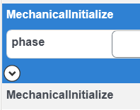

Aligning the Wash Wheel
This topic includes information about how to align the wash wheel.
Prerequisites
Before you begin an alignment procedure:
- If you must make changes to the instrument's hardware, you must complete those changes before you prepare the instrument for adjustments and alignments.
- You must verify that alignments have previously been completed on the instrument. To verify, in the Machine Control App go to to open the Prototype Alignment page and to verify the Finalize Instrument Alignments button is GRAY in color. If the button is BLUE in color, do not complete this procedure. Instead, you must first complete manual alignments.
- You must first initialize the instrument to a GREEN (Ready) status to ensure all subsystems have been successfully initialized and homed. You must then enter the instrument into a BLUE (Maintenance) status.
Prepare the Instrument for Adjustments and Alignments
You must prepare the instrument for adjustments and alignments.
- Sign in to use the BeckmanAdmin account. See Signing In to Use the BeckmanAdmin Account for more information.
- Disable the interlock switch. See Enabling and Disabling the Interlock System for Cover Switch Sensors for more information.
- Open all hoods and covers.
- Initialize the instrument to a
GREEN (Ready) status. See
Initializing the Instrument for more information.
Note: If the instrument enters into a RED (Stopped) status:
- Verify the interlock switch is in the correct position.
- Be sure you are signed in to use the BeckmanAdmin account.
- In the Console App go to and select Start Session.
- Complete all troubleshooting, adjustments, manual alignments, and maintenance necessary to be able to initialize the instrument to a GREEN (Ready) status.
- Select the SYSTEM RUNNING button and go to to enter the instrument into a YELLOW (Paused) status.
Preparing the Wash Wheel
Perform this procedure to prepare the wash wheel for alignment.
- In the Console App go to to open the Intrusive Diagnostics page. Select Start Session.
- In the Machine Control App go to .
- On the Action tab select
MechanicalInitialize (the top selection).

- Select Execute.
- If alignment is successful, the status message will display the notification WashWheel.Assembly - MachineControlStatus(OK).
Auto-Aligning the Wash Wheel
Perform this procedure to auto-align the wash wheel.
Warning: Do not perform this auto-alignment on instruments with software version 1.22 or earlier installed. Instead, perform the
Auto-Aligning Individual Wash Wheel Settings procedure to auto-align the wash wheel to individual subsystems.
- In the Console App go to to open the Intrusive Diagnostics page. Select Start Session.
- In the Machine Control App go to to open the Prototype Alignment page.
- Go to Wash Wheel.
- Select
Auto Align.
Note: If the Wheel alignment value changes you must auto-align the analytic PnP to the wash wheel.See Adjusting and Aligning the Analytic Pick and Place (PnP) for more information.
- Calibrate the wash wheel camera and pressure sensors. See Calibrating the Wash Wheel Dispense Volume Camera Setting, Calibrating the Wash Wheel Residual Volume Camera Setting, and Calibrating the Pressure Sensors for the Wash Wheel for more information.
- Complete verification. See Verifications for more information.
Auto-Aligning Individual Wash Wheel Settings
Perform this procedure to auto-align individual wash wheel settings.
- In the Console App go to to open the Intrusive Diagnostics page.
- Select Start Session.
- In the Machine Control App go to to open the Prototype Alignment page.
- Go to .
- Select Auto Align.
- Go to .
- Select
Auto Align.
Note: If the WashWheel.Alignment value changes, you must auto-align the analytic pick-and-place (PnP) to the wash wheel. See Adjusting and Aligning the Analytic Pick and Place (PnP) for more information.
- Go to .
- Select Auto Align.
- Go to .
- Select Auto Align.
- Calibrate the wash wheel camera and pressure sensors. See Calibrating the Wash Wheel Dispense Volume Camera Setting, Calibrating the Wash Wheel Residual Volume Camera Setting, and Calibrating the Pressure Sensors for the Wash Wheelfor more information.
- Complete verification. See Verifications for more information.
Aligning the Wash Station
Note: This alignment is a fixed position and should not typically require a change.
- In the Console App go to to open the Intrusive Diagnostics page. Select Start Session.
- in the Machine Control App go to to open the Prototype Alignment page.
- Go to .
- For the WashWheelA1WashAlignment alignment key type 3 in the Alignment Value box.
- Select Enable All.
- Select Save All.
- Calibrate the wash wheel camera and pressure sensors. See Calibrating the Wash Wheel Dispense Volume Camera Setting, Calibrating the Wash Wheel Residual Volume Camera Setting, and Calibrating the Pressure Sensors for the Wash Wheel for more information.
- Complete verification. See Verifications for more information.
Ending an Adjustments and Alignments Session
- In the Console App go to .
- Select End Session.
- Close all hoods and covers.
- Enable the interlock switch. See Enabling and Disabling the Interlock System for Cover Switch Sensors for more information.
- Sign out from the BeckmanAdmin account.
- Sign in to use the LabUser account.
- Initialize the instrument to a GREEN (Ready) status. See Initializing the Instrument for more information.
Verifications
Complete the verification of service repair. See Verification of Service Repairs for more information.